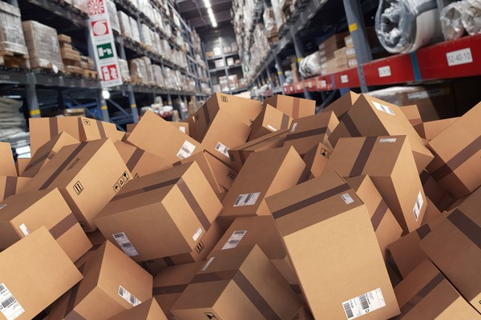
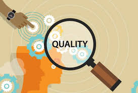
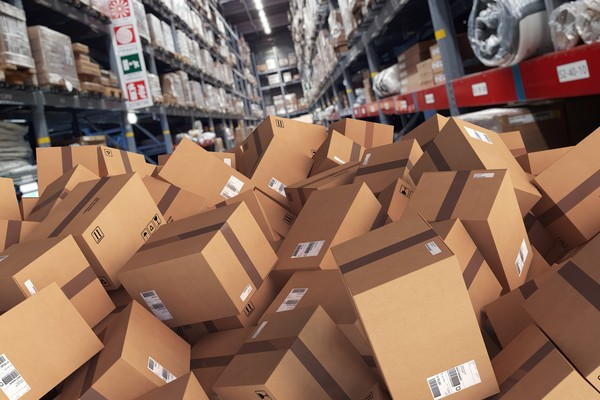
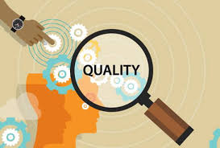

📌 편의점 DB 구축 프로젝트
Problem (비효율 정의)
전국 편의점의 파편화된 상품/판매 데이터를 체계적으로 통합할 DB 구조 부재.
Action (데이터 모델링)
SQL 기반의 관계형 데이터베이스를 설계하고, 실제 판매 데이터를 수집·정제하여 모델에 적용.
Result (실무 활용성)
실제 판매 트렌드 분석 및 상품 재고 예측을 위한 데이터 구조 기반 마련.
📊 제조기업 데이터 분석
Problem (지표 분석)
제조기업 가상 데이터를 활용하여 잠재적 불량률 및 생산 효율 저하 요인 탐색.
Action (분석 및 기술 적용)
Python(pandas) 및 R을 활용, 재고 회전율 및 불량 지표를 분석하고 데이터 시각화.
Result (개선 아이디어)
데이터 기반의 구체적 개선안을 도출하여 학내 과제 우수 평가 획득.
⚙️ 졸업작품: 물류 흐름 최적화
Goal (최적화 목표)
창고 내 입출고 병목 현상을 해결하고, 실시간 재고 현황 모니터링 시스템 구현.
Method (시뮬레이션 및 기술)
Python, Java를 이용한 입출고 시뮬레이션 모델 개발 및 Tableau를 활용한 시각화 계획.
Expected Impact (예상 영향)
물류 시스템의 운영 비용 절감 및 효율성 수치적 증명.
202X년 완료 예정 (계획서 참조)
 


